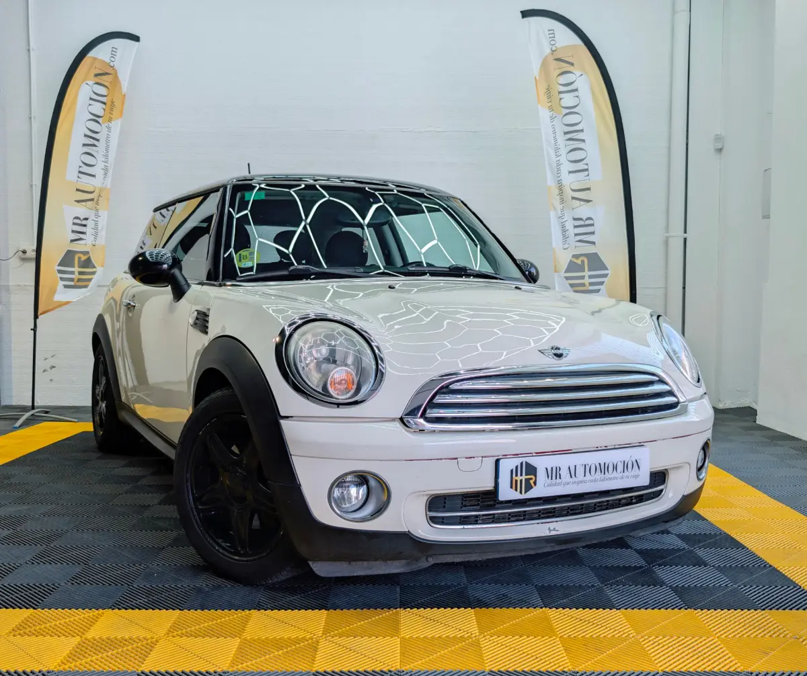

1 / 24Te presentamos este atractivo Mini Cooper D del año 2008 , un compacto icónico que combina estilo británico, conducción dinámica y eficiencia excepcional. Equipado con un motor diésel de 1.6 litros y cambio manual de 6 velocidades , este vehículo ofrece agilidad y economía de consumo ideales para la ciudad y carretera.
Con 200.000 km certificados , importado, carrocería de 3 puertas, capacidad para 4 plazas, etiqueta medioambiental B, sistema Start/Stop y 1 año de garantía , este Mini está preparado para proporcionarte una experiencia de conducción divertida y práctica con un diseño distintivo que no pasa de moda.
Motor y prestaciones Motor diésel de 1560 cc eficiente y económico Cambio manual de 6 velocidades Tracción delantera, ágil y segura Exterior Diseño icónico y compacto, característico de Mini Carrocería de 3 puertas en color Beig metalizado con techo y faros en negro Faros con encendido automático Sensor de lluvia Parabrisas calefactado Retrovisor interior antideslumbrante Llantas de aleación 5 Star Blaster 6.5 x 16 (195/55) Cristales laterales y traseros oscurecidos (40%) Línea cromada exterior Interior y confort Interior ergonómico con capacidad para 4 pasajeros Tapicería tela/cuero Ray cream-white Volante deportivo de cuero de tres brazos y multifunción con control por voz integrado Radio Mini Boost CD (con MP3) Conexión AUX en consola central Línea cromada interior Iluminación interior práctica y elegante Seguridad y asistentes Sistema ABS con distribución electrónica de frenado (EBD) Control de estabilidad ,tracción y frenada en curva (DSC III, ASC+T, CBC) Airbags frontales y laterales Faros automáticos con sensor de luminosidad Anclajes ISOFIX en asientos traseros Sistema Start/Stop Control de crucero ¿Por qué este Mini Cooper D? ✔ Motor diésel eficiente y de bajo consumo ✔ Compacto, ágil y divertido de conducir ✔ Ideal para ciudad y trayectos diarios ✔ Equipamiento práctico y funcional ✔ Estilo icónico ✔ Garantía de 1 año incluida ✔ Transferencia incluida Este anuncio puede contener errores; estos datos son de carácter informativo.
| Marca | MINI |
|---|---|
| Modelo | MINI Cooper D |
| Año | Oct 2008 |
| Kilómetros | 191.151 km |
| Combustible | Diésel |
| Cambio | Manual |
| Potencia | 109 CV |
| Garantía | 1 Año |
| IVA | NO DEDUCIBLE |
Quizá también te encaje